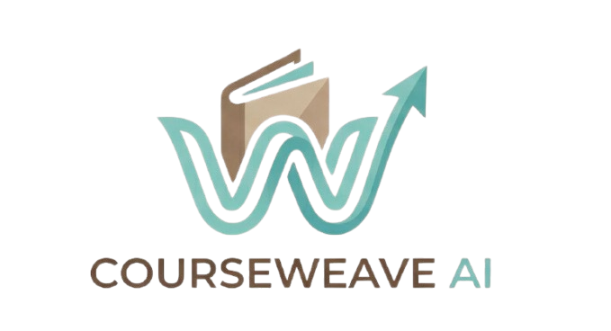
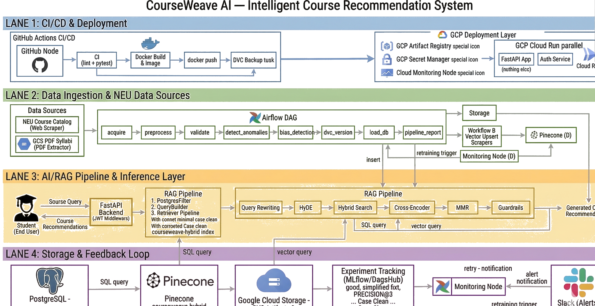

Career-Aligned, AI-Powered Course Recommendation for Northeastern University Graduate Students

Existing academic planning tools do not bridge a student's professional objectives to program-specific course selection at NEU.
Without structured guidance, students lack a systematic approach to identify courses aligned with their target role across Northeastern's expansive catalog.
Eligibility conflicts surface at the point of registration rather than during long-term academic planning — leaving limited time to course-correct.
The student specifies their target role — e.g., Data Engineer, ML Engineer, or Business Analyst.
Adzuna labor market intelligence identifies the competencies employers currently require for that role.
Only prerequisite-compliant, degree-eligible, non-duplicate courses from NEU's catalog are surfaced.
Each recommendation is grounded in the student's academic history, degree track, and stated career objective.

8-task DAG: acquire → preprocess → validate → anomaly detect → DVC version → load → report
Precision@3, recall, guardrail violations, and Gemini fallback count logged per evaluation run
Ruff lint, unit tests, import validation, and Docker build triggered on every push to main
Pinecone hybrid retrieval (dense BGE + sparse BM25) with HyDE — grounded in NEU syllabi and the institutional course catalog.
Enforced guardrails ensure only eligible, not-yet-completed courses are presented. Zero violations recorded across all evaluation cases.
Tracks core vs. elective credit balance, cumulative GPA, expected graduation timeline, and degree path (coursework / project / thesis).
Natural language interface with persistent conversation history, enabling iterative academic planning. Powered by Gemini 2.5 Flash.
Visual, semester-by-semester academic plan aligned to the student's career objective and remaining program requirements.
Automates data-intensive course matching, enabling advisors to focus on high-value, strategic student engagements.
Structured course sequencing aligned to professional objectives supports on-time graduation and strengthens post-graduate employment readiness.
Bridges real-time employer skill demand with NEU's academic offerings — informing alignment between workforce requirements and institutional curriculum.
Aggregated recommendation patterns surface emerging skill areas underserved by current NEU offerings, providing actionable signals for program development.